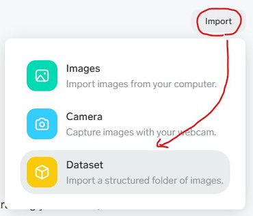

Node-REDで機械学習を行ってみます。連携するのは「Microsoft Lobe」です。
Lobeは、機械学習に必要なモデルを作成する無料のアプリケーションです。特徴としては以下の通りです。
- 誰でも簡単に使用できるように設計されています。(ノーコード)
- ローカルPC上で無料でトレーニングできます。
- 複数のプラットフォーム用のモデルをエクスポートできます。
現在は、画像分類のみですが、物体検出やデータ分類も近日公開のようです。(2021/10/01現在)
Lobeの面白い機能に、所望のプロジェクトを開くとローカルPCでのみ利用可能なREST APIサーバーが稼働する機能があります。今回はこの機能を利用してみます。
Lobeでモデルを作成する手順と、Node-REDからモデルを利用する手順を説明します。2回に分けて説明します。
Lobeでモデルを作成する手順
Lobeのインストーラーのダウンロードは、こちらの右上の[ダウンロード]ボタンを押してください。
使用する画像セットは、画像処理ライブラリ「HALCON」で有名なMVTEC社のMVTEC ANOMALY DETECTION DATASET (MVTEC異常検出データセット)を使わせてもらいます。
今回は「Bottle (148 MB)」を使います。ファイルはtar.xzファイルです。7zなどを使って展開してください。
展開して作成されたフォルダ内の「test」フォルダの画像を使います。
「broken_large」、「broken_small」、「contamination」、「good」というフォルダ内のそれぞれ16枚の画像を使います。残りは最後に確認するために残しておきます。他のフォルダに移動しておきましょう。
Lobeを起動します。[New project]ボタンを押します。
プロジェクト名を付けましょう。
[import] -> [Dataset] -> [Choose Dataset] -> 先ほどのtestフォルダを選択

さらに、「Label Using Folder Name」をON -> [Import]
インポートすると自動的にトレーニングが始まります。[Training]を選択すると、現在の正解率などを見ることができます。
完了した直後は正解率が低い場合があります。以下の手順で最適化しましょう。
左のバーガーアイコン -> [Optimize Model] -> [Optimize] -> 待ちます。。。
完了したら[All Images]をクリックして、「Incorrect」を見てみましょう。
今回の場合は大半がNGの分類の失敗で、OK品とNG品を間違えたのは2つでした。個人的にはまずまずかなと思います。今回は、16枚程度の画像でトレーニングしたので、もっと増やせば精度が上がるのでしょう。
[Use]を押して、トレーニング後にチェックとして使うために残しておいた画像をドラッグ＆ドロップしてください。うまく分類されたでしょうか。
Lobeが面白いのはこの時点でサーバーとして機能しているところです。
[Use] -> [Export] -> 一番上のURLをコピーしてください
では次に、Node-REDからモデルを利用する手順を行います。